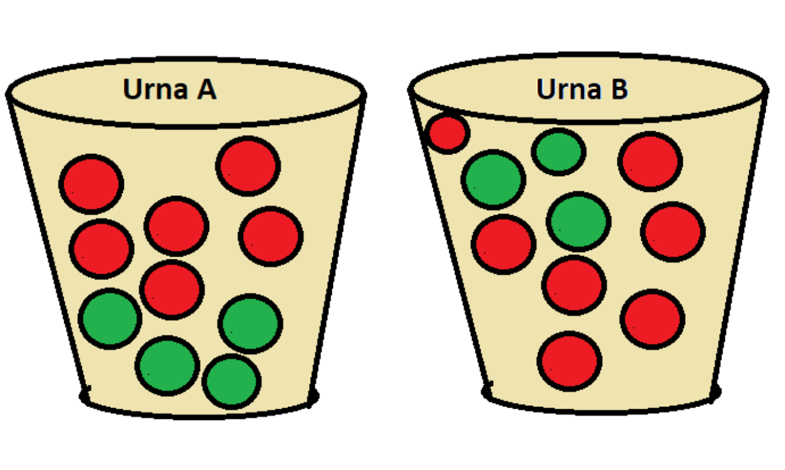

Si dos de los seis sistemas en realidad están defectuosos, encuentre la probabilidad de que al menos uno de los dos sistemas probados sea defectuoso. Encuentre la probabilidad de que ambos sean defectuosos.
Si cuatro de los seis sistemas están defectuosos en realidad, encuentre las probabilidades indicadas en el inciso a.
¿Cuántos nombres de dominio compuestos de exactamente dos letras pueden ser formados?
¿Cuántos nombres de dominio de dos letras existen si como caracteres se permiten dígitos y números? [Nota: Una longitud de carácter de tres o más ahora es obligatoria.] Rta/ 676; 1296
¿Cuántos nombres de dominio existen compuestos de tres letras en secuencia? ¿Cuántos de esta longitud existen si se permiten letras o dígitos? [Nota: En la actualidad todos están utilizados.] Rta(17576; 46 656)
Responda las preguntas hechas en b) para secuencias de cuatro caracteres. Rta(456976;1679616)
Con fecha de abril de 2006, 97786 de las secuencias de cuatro caracteres utilizando letras o dígitos aún no habían sido reclamadas. Si se elige un nombre de cuatro caracteres al azar, ¿cuál es la probabilidad de que ya tenga dueño? Rta(0.942)
a.¿Cuántos autos tendría que tener en existencia un distribuidor si incluyera uno por cada combinación de estilo, motor y transmisión?
b.¿Cuántos tendría que tener en existencia un centro de distribución si todos los colores de autos se tuvieran para cada combinación del inciso a?
Una flota de nueve taxis se ha de despachar a tres aeropuertos en forma tal que tres vayan al aeropuerto A, cinco al aeropuerto B y uno al aeropuerto C. A. ¿En cuántas formas distintas se puede lograr esto? Suponga que los taxis son asignados a aeropuertos al azar. a Si exactamente uno de los taxis necesita reparación, ¿cuál es la probabilidad de que sea despachado al aeropuerto C? b Si exactamente tres de los taxis necesitan reparación, ¿cuál es la probabilidad de que cada aeropuerto reciba uno de los taxis que necesita reparación?
Un restaurante de nivel económico alto ofrece un menú especial de precios fijos en el que, por un costo fijo de comidas, una persona puede seleccionar de entre cuatro aperitivos, tres ensaladas, cuatro entradas y cinco postres. ¿Cuántas comidas diferentes hay si una de ellas consta de un aperitivo, una ensalada, una entrada y un postre?
Un amigo mío va a ofrecer una fiesta. Sus existencias actuales de vino incluyen 8 botellas de zinfandel, 10 de merlot y 12 de cabernet (él sólo bebe vino tinto), todos de diferentes fábricas vinícolas.
a.Realice el diagrama de ven
Uno de los trenes hidráulicos se selecciona al azar. ¿Cuál es la probabilidad de que el conjunto tenga:
Una persona inscrita en psicología haya estudiado las tres materias.
Una persona que no se inscribió en psicología haya tomado historia y matemáticas.
Un estudiante inscrito en historia, haya tomado matemáticas.
Un estudiante que no haya cursado matemáticas, haya cursado historia.
3.De un grupo de 1352 turistas que visitan México se encuentra que, 935 de ellos visitaron las momias, 955 el museo de antropología, 925 las pirámides, 35 fueron a las pirámides, pero no al museo ni las momias, 80 fueron al museo, pero no a las pirámides ni a las momias, 120 estuvieron en las momias, pero no fueron ni a las pirámides ni al museo, 590 estuvieron en las momias y en las pirámides, 350 estuvieron en los 3 lugares. indique cuantas de estas personas asistieron a: a. Defina los eventos y realice el diagrama de ven Cuál es la probabilidad de que: b. Una persona asista a exactamente a uno de estos lugares c. Una persona asista exactamente a 2 lugares d. Una persona asista al menos a un lugar e. Una persona que no asistió al museo haya asistido a las pirámides
4.Una compañía de electricidad ofrece una tarifa de consumo mínimo a cualquier usuario cuyo consumo de electricidad sea de menos de 240 kWh durante un mes particular. Si A denota el evento en que un usuario seleccionado al azar en una cierta comunidad no excede el consumo mínimo durante enero y B el evento análogo para el mes de julio (A y B se refieren al mismo usuario. Suponga P(A) = 0.8, P(B)= 0.7 y P(A ∩ B) = 0.9. Calcule lo siguiente: a. P(A U B) b. La probabilidad de que el consumo mínimo sea sobrepasado en exactamente uno de los dos meses. Describa este evento en función de A y B.
por lo menos a uno de los dos periódicos ?
Solo al periódico local?
Solo al periódico metropolitano?
Exactamente a uno de los dos periódicos?
Con la información anterior construya una tabla de doble entrada
Si se selecciona aleatoriamente a uno de estos individuos y los eventos son DEPENDIENTES, encuentre la probabilidad de que la persona experimente diabetes, y consuma licor moderadamente.
Halle la probabilidad de que sea diabético dado que consume licor
Grafique el diagrama de venn
Calcule la probabilidad de que el individuo seleccionado tenga por lo menos uno de los dos tipos de tarjetas
Dado que el individuo seleccionado tiene por lo menos una tarjeta, ¿cuál es la probabilidad de que el estudiante tenga una tarjeta master card?
Calcule \(P(B'|A)\) y \(P(A|B)\)
| HIJO EN UNIVERSIDAD | CP ALTO | CP RAZONABLE | CP BAJA |
|---|---|---|---|
| SI | 0.2 | 0.09 | 0.01 |
| NO | 0.41 | 0.21 | 0.08 |
carga de prestamo=CP
| Auto | ninguno | Bajo | Medio | Alto |
|---|---|---|---|---|
| Bajo | 0.04 | 0.06 | 0.05 | 0.03 |
| Medio | 0.07 | 0.1 | 0.2 | 0.1 |
| Alto | 0.02 | 0.03 | 0.15 | 0.15 |
¿Cuál es la probabilidad de que el individuo tenga un deducible de auto medio y un deducible de casa alto? rta(0.1)
¿Cuál es la probabilidad de que el individuo tenga un deducible de casa bajo y un deducible de auto bajo? rta(0.18 0.19)
¿Cuál es la probabilidad de que el individuo se encuentre en la misma categoría de deducibles de casa y auto? rta(0.41)
Basado en su respuesta en el inciso c), ¿cuál es la probabilidad de que las dos categorías sean diferentes? rta(0.59)
¿Cuál es la probabilidad de que el individuo tenga por lo menos un nivel deducible bajo? rta(0.31)
Utilizando la respuesta del inciso e). ¿cuál es la probabilidad de que ningún nivel deducible sea bajo? rta(0.69)
| Necesita lentes | Usa lentes | No usa lentes |
|---|---|---|
| Si | 0.44 | 0.14 |
| No | 0.02 | 0.4 |
Si se selecciona un solo adulto del grupo grande, encuentre las probabilidades de que a. El adulto necesita lentes, b necesita lentes pero no los usa, c usa lentes los necesite o no. d. Halle la probabilidad de que un adulto necesita lentes SI no los usa.
GS: Grupo sanguíneo GE: Grupo étnico
| Grupo étnico | GSO | GSA | GSB | GSAB |
|---|---|---|---|---|
| 1 | 0.082 | 0.106 | 0.008 | 0.004 |
| 2 | 0.135 | 0.141 | 0.018 | 0.006 |
| 3 | 0.215 | 0.2 | 0.065 | 0.02 |
Suponga que se selecciona un individuo al azar de la población y que los eventos se definen como: A={tipo A seleccionado} B={tipo B seleccionado} C={grupo étnico 3 seleccionado}
Calcule P(A), P(C) y P(AnC).
Calcule tanto P(A | C) y P(C | A) y explique en contexto lo que cada una de estas probabilidades representa.
Si el individuo seleccionado no tiene sangre de tipo B, ¿cuál es la probabilidad de que él o ella pertenezca al grupo étnico 1?
7.Para los clientes que compran un refrigerador en una tienda de aparatos domésticos, sea A el evento en que el refrigerador fue fabricado en EU, B el evento en que el refrigerador contaba con una máquina de hacer hielos y C el evento en que el cliente adquirió una garantía ampliada. Las probabilidades pertinentes son. \(P(A)= 0.75\) \(P(B|A)=0.9\) \(P(B|A')=0.8\) $P(C |A ∩ B)= 0.8 $ \(P(C| A ∩ B') = 0.6\) \(P(C|A' ∩ B) = 0.7\) \(P(C| A' ∩ B')=0.3\)
| fondo de inversión | Porcentaje |
|---|---|
| Mercado de dinero | 20% |
| Acciones de alto riesgo | 18% |
| Bonos a corto plazo | 15% |
| Bonos a plazo moderado | 25% |
| Bonos a largo plazo | 5% |
| Acciones de riesgo intermedio | 10% |
| Acciones de riesgo Balanceado | 7% |
Se selecciona al azar un cliente que posee acciones en sólo un fondo.
¿Cuál es la probabilidad de que el individuo seleccionado posea acciones en el fondo balanceado? Rta(0.07)
¿Cuál es la probabilidad de que el individuo posea acciones en un fondo de bonos? Rta(0.3)
¿Cuál es la probabilidad de que el individuo seleccionado no posea acciones en un fondo de acciones? Rta(0.57)

Si tiene un localizador de emergencia, ¿cuál es la probabilidad de que no sea localizada?
Si no tiene un localizador de emergencia, ¿cuál es la probabilidad de que sea localizada?
¿Cuál es la probabilidad de que el siguiente cliente pida gasolina plus y llene el tanque (A2 ∩ B)? rta (0.21)
¿Cuál es la probabilidad de que el siguiente cliente llene el tanque? rta(0.455)
Si el siguiente cliente llena el tanque, ¿cuál es la probabilidad que pida gasolina regular? ¿Plus? ¿Premium? Rta (0.264 0.274)
considere la siguiente información adicional sobre el uso de tarjetas de crédito:
El 70% de todos los clientes que utilizan gasolina regular y que llenan el tanque usan una tarjeta de crédito. El 50% de todos los clientes que utilizan gasolina regular y que no llenan el tanque usan una tarjeta de crédito. El 60% de todos los clientes que llenan el tanque con gasolina plus usan una tarjeta de crédito. El 50% de todos los clientes que utilizan gasolina plus y que no llenan el tanque usan una tarjeta de crédito. El 50% de todos los clientes que utilizan gasolina Premium y que llenan el tanque usan una tarjeta de crédito. El 40% de todos los clientes que utilizan gasolina premium y que no llenan el tanque usan una tarjeta de crédito. Calcule la probabilidad de cada uno de los siguientes eventos para el siguiente cliente que llegue (un diagrama de árbol podría ayudar).
{Plus, tanque lleno y tarjeta de crédito} rta(0.126)
{Premium, tanque no lleno y tarjeta de crédito} rta(0.05)
{Premium y tarjeta de crédito} rta(0.1125)
{Tanque lleno y tarjeta de crédito} rta(0.2725)
{Tarjeta de crédito} rta(0.5325)
Si el siguiente cliente utiliza una tarjeta de crédito, ¿cuál es la probabilidad de que pida premium? rta(0.2113)
rta/P(Media|S)= 0.3922, P(Media|S)= 0.2941, de modo que Media y Mediana son la más y la menos probable, respectivamente